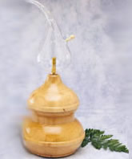

100% ESSENTIAL OIL PRODUCTS THAT DELIVER THE FULL VALUE OF AROMATHERAPY.
Quality makes all the
difference and puts our
oils, waters, and mixtures
truly in a class by
themselves. Your customers
will come back for more
because our pure essential
oils are still fresh and
alive and actually smell
like live plants. Our lines
are guaranteed to be free
from adulterations of any
kind and are gas
chromatography tested for
purity. We deliver
therapeutic quality
essential oil products that
build customer loyalty
because they do what they
are supposed to do and they
do it every time.
100%
Essential Oils |
Synergies |
Aladdin
Cold Air Diffuser |
 |
 |
 |
100% ESSENTIAL OILSFresh and alive, all of our oils are therapeutic grade, and we guarantee them to be 100% pure and free from adulteration of any kind. We inventory over 200 different essential oils and carry everything from the most popular to the most obscure. Oils come in 1/2 oz. blue glass bottles and are also available in bulk. On request, we can cite the origins and plant parts used in of all of our oils and we will also provide certificates of authenticity if required.
|
BASSETT SYNERGIESSkillful blending of two or more pure essential oils can create very distinctive aromas with exceptional therapeutic qualities. Because the individual oils used in a synergistic blend actually enhance qualities in each other, Bassett Synergies are more powerful and potent than a single oil, used by itself. We offer 15 original synergies in 1/2 oz. blue glass bottles.
|
COLD AIR ELECTRIC DIFFUSERSHeat absolutely destroys the life essence in essential oils, so these diffusers are a 'must have' if you want to maintain therapeutic vitality. Imported from France, these diffusers are both beautiful and practical. They house a very quiet electric air pump inside a wooden base, and feature hand-blown glass containers. Before diffusing oils into a room, the diffusers break the oils into tiny micro particles. Two styles are available; either will freshen a room in about 20 minutes. Excellent for home, office or salon. Use with 100% pure essential oils, or pure synergy blends.
|
| Wholesale Catalog 1/4 | Wholesale Catalog 2/4 | Wholesale Catalog 3/4 | Wholesale Catalog 4/4 | ||